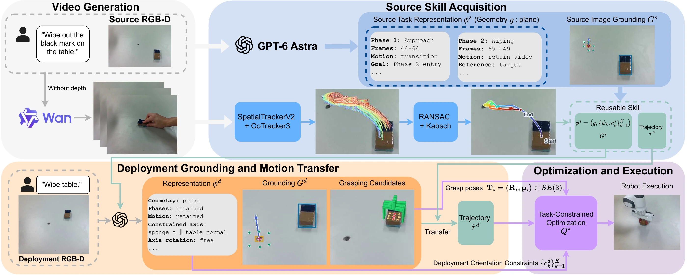
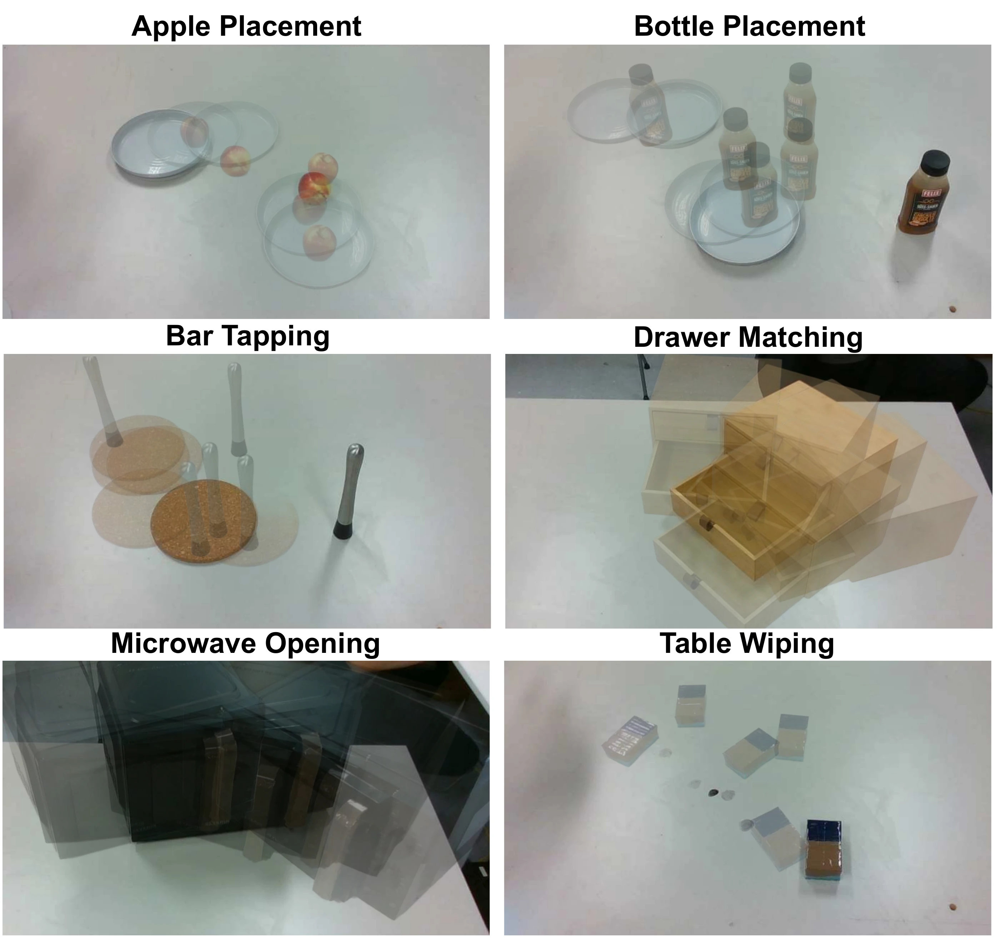

Abstract
Human manipulation videos provide rich motion and interaction cues for acquiring robot skills without robot demonstrations. Video generation models synthesize such demonstrations from an initial scene image and task instruction, avoiding the need to record demonstrations for each task. However, the recovered motion captures only one scene-specific realization, leaving task structure, geometric relations, and constraints implicit. We present V2-STRep, a zero-shot framework that converts generated video motion into reusable robot skills through VLM-grounded structured task representations. The representation specifies motion phases, references, and task-relevant constraints, with targets described by minimal geometric structures: points, point-normals, axes, planes, and full 6D poses. VLM-provided 2D image-space cues are lifted into 3D using RGB-D observations to reconstruct task geometry and candidate grasp poses. Geometry-specific rules transfer motion to new scenes, while task-constrained trajectory optimization couples grasp selection with complete robot motion planning. It preserves task requirements while using remaining rotational freedom to accommodate joint limits. Updating deployment grounding and constraints enables reuse under new compatible instructions without generating another video. Experiments on six real-world manipulation tasks demonstrate improved execution success over baselines, reliable cross-scene transfer of successfully acquired skills, and adaptation to changed deployment instructions.
Overview

Pipeline of V2-STRep, illustrated with the table wiping task. VLM inference, grounding, and 3D motion recovery produce a reusable skill. Deployment grounding and motion transfer adapt the skill to a new scene. Task-constrained optimization combines grasp selection with complete trajectory planning for robot execution.
Baseline Comparisons
| Method | Apple | Bottle | Bar | Drawer | Microwave | Table | Overall |
|---|---|---|---|---|---|---|---|
| NovaFlow | 3/5 | 3/5 | 0/5 | 0/5 | 5/5 | 1/5 | 12/30 |
| Dream2Flow | 5/5 | 2/5 | 0/5 | 1/5 | 0/5 | 0/5 | 8/30 |
| V2-STRep (ours) | 5/5 | 5/5 | 2/5 | 4/5 | 5/5 | 4/5 | 25/30 |
Bottle placement
Video generation prompt: A human hand slowly lifts up the bottle, then moves it to the top center of the plate, and finally places it on the plate. The human hand should not visually obscure the manipulated object. The robot in the scene should not move. The camera holds a still pose, no zooming in or out.
Dream2Flow
NovaFlow
No robot execution
Optimization failed due to a joint limit.
Cross-Scene Transfer
29/30 successful trials across five new configurations per task, using successfully acquired skills.
Apple placement5/5
Bottle placement5/5
Bar tapping5/5
Drawer matching5/5
Microwave opening5/5
Table wiping4/5
Generated source video
Robot execution
Scene configurations

Instruction Adaptation
Select a different object
Generated source video
Robot execution with new instruction
Source instruction slowly lift up the apple, move to top center of the plate, and place it to the plate.
Deployment instruction slowly lift up the lemon, move to top center of the plate, and place it to the plate.
Select a different target
Generated source video
Robot execution with new instruction
Source instruction slowly move the sponge to the black mark on table center, and slightly wipe it out.
Deployment instruction slowly move the sponge to the black mark near the wooden plate, and slightly wipe it out.
Change the orientation requirement
Generated source video
Robot execution with new instruction
Source instruction slowly lift up the bottle, then move to the top center of the plate, and finally place it on the plate.
Deployment instruction slowly lift up the bottle, then move to the top center of the plate, and finally place it on the plate. No orientation constraints.
VLM Prompts
You analyze one robot-manipulation demonstration video.
INPUTS
- initial RGB image
- demonstration video
- natural-language instruction
- total frame count
- image width and height
GOAL
Return the minimum execution structure needed to transfer the demonstration, plus pixel grounding for the demonstration initial frame. Return JSON only.
TASK INSTRUCTIONS
Directly copy the input natural-language instruction
CANONICAL CONTROLLED FRAME
The metric controlled-object frame is computed later from the initial segmented RGB-D point cloud:
- +z: the PCA axis most aligned with world +z (the table normal); choose its sign toward world +z.
- +x: among the other PCA axes, choose the one most aligned with the horizontal direction from the object toward the camera; choose its sign in the opposite direction, away from the camera.
- +y: +z cross +x; then recompute +x as +y cross +z.
This frame is computed once at the initial pose and transported rigidly through the video using tracked 3D correspondences and robust rigid fitting. It is not recomputed per frame. The VLM must not output metric axes.
The x/y axes provide a deterministic view-defined semantic gauge for describing task-relevant orientation relations. Use controlled x/y constraints only when such a relation is visibly meaningful for the task. For rotationally symmetric objects, x/y may be arbitrary gauge directions and rotation around z may remain free.
REFERENCE FRAMES
Use only:
- "grasp": canonical frame attached to the controlled entity; origin is selected later from grasp grounding and orientation follows the controlled frame above.
- "target": frame constructed later from target RGB-D geometry.
TARGET REPRESENTATION
Choose exactly one representation sufficient for all target-referenced phases.
Select it from the geometry required by the complete demonstrated motion, not only from the final target position. Use the least complex representation that preserves every required target-relative position, direction, and orientation relationship.
- "point"`: target position only; no target axis.
- "point_normal"`: target point + local surface normal; only target `z` is meaningful. Use when a localized interaction with the surface direction is important.
- "axis"`: one explicit task-relevant physical/functional axis; only target `z` is meaningful. Use for the motion rotate about an axis and an approximate physical axis is visable.
- "plane"`: point on an extended planar region + plane normal; only target `z` is meaningful. Use for continuous and close contact to a surface region with force.
- "object_pose_6d"`: full segmented target-object pose; target `x/y/z` are meaningful. Use when motion depends on the target object's full body frame.
Rules:
- Use the simplest representation sufficient for the task.
- Prefer "point" when object rotation is free and are not task-relative.
- Prefer "point_normal" when one local surface direction is sufficient.
- Prefer "axis" only when one explicit functional axis is sufficient.
- Prefer "plane" only when continuous and close contact to a surface with force.
- Prefer "object_pose_6d" when full object alignment are required.
- The representation must support every target axis referenced by the rotation policies.
PHASES
Use the minimum number of ordered, non-overlapping phases. Frame indices are inclusive. The first phase starts at the first frame where the controlled entity begins motion.
motion_source:
- "learn_demo": retain the demonstrated trajectory.
- "attractor": discard that demonstrated path and connect to the entry of a later target-referenced learn_demo phase. Use reference_frame=null and name that later phase in attractor_goal_phase_id.
reference_frame for learn_demo:
- "grasp": retain motion relative to the controlled pose at phase entry.
- "target": retain motion relative to the demonstration target frame.
ROTATION POLICY
Every phase has one mode:
- "free": no orientation constraint; axis_constraints=[]; remaining_rotation="free"; phase symmetry none.
- "axis_constrained": constrain one or two controlled axes to grasp or target axes. remaining_rotation is "free", "fixed_from_demo", or "none".
- "full_demo": preserve the complete demonstrated relative orientation; axis_constraints=[]; remaining_rotation="none".
Each axis constraint contains:
- controlled_axis: "x" | "y" | "z"
- reference_frame: "grasp" | "target"
- reference_axis: "x" | "y" | "z"
- relation: "same_direction" | "opposite_direction" | "parallel_either_direction"
- controlled_positive_end_description: short visible cue or null
- reference_positive_end_description: short visible cue or null
TARGET-AXIS RULES
- "point" has no target axis and cannot be used in a target-axis constraint.
- For "point_normal", target z is the local surface normal.
- For "axis", target z is the physical or functional axis.
- For "plane", target z is the plane normal.
- For "point_normal", "axis", and "plane", target x and y are undefined and must not be referenced.
- For "object_pose_6d", target x, y, and z may be referenced.
- If a phase requires target x or target y, use "object_pose_6d".
PHASE SYMMETRY
Use phase_symmetry.mode="shared_offset" only when a target-referenced learn_demo phase with mode="full_demo" may receive one constant rotation about a physically meaningful symmetric target axis. The optimizer, not the VLM, selects the angle from robot feasibility, smoothness, and collision constraints. Do not output a numerical angle or a demo angle reference.
shared_offset requires:
- motion_source="learn_demo"
- reference_frame="target"
- rotation mode="full_demo"
- phase_symmetry.reference_frame="target"
- one meaningful target symmetry axis
- the same angle applies to the complete phase
For point_normal, axis, and plane targets, only target z may be the symmetry axis. A point target has no symmetry axis.
REPEATABILITY
Set repeatable=true only for a learn_demo phase containing a complete repeatable cycle. Return one representative cycle interval. Attractors are never repeatable.
DEMO INITIAL GROUNDING
Ground the initial video frame for RGB-D reconstruction.
Pixel: [x,y]. Bbox: [x_min,y_min,x_max,y_max]. All coordinates must be inside the image.
Return:
- controlled entity: tight bbox and 2-6 interior positive pixels.
- allowed grasp region: bbox and 1-4 interior pixels when a grasp must be generated; otherwise null.
- target entity: tight bbox.
- target geometry evidence required by the selected representation:
- point: target_point_pixel
- point_normal: target_point_pixel and 4-6 surface_pixels
- axis: axis_origin_pixel and, when visible, two axis_pixels
- plane: plane_reference_pixel, plane_reference_mode and 4-6 surface_pixels, plane_reference_pixel is the task-relevant reference point, select either the center of the interaction region or a specific target point, Use plane_reference_mode="center" for the center of the interaction region and "target" for a specific task target
- object_pose_6d: target_object_bbox and 2-6 target_object_positive_pixels
Return target positive-end evidence only when a directed target axis is required and visibly supported. Do not invent hidden geometry.
DO NOT OUTPUT
No metric 3D coordinates, depth, vectors, normals, matrices, quaternions, Euler angles, robot poses, joints, forces, confidence scores, rationale, or numerical symmetry angle.
REQUIRED JSON
{ "task_instruction":"copy input instruction",
"video_structure": {
"controlled_entity": {"description": "short visible description"},
"target_entity": {"description": "short visible description"},
"target_representation": "point | point_normal | axis | plane | object_pose_6d",
"phases": [
{
"phase_id": "phase_1",
"name": "short functional name",
"start_frame": 0,
"end_frame": 0,
"motion_source": "learn_demo | attractor",
"reference_frame": "grasp | target | null",
"attractor_goal_phase_id": null,
"repeatable": false,
"cycle_interval": null,
"rotation_policy": {
"mode": "free | axis_constrained | full_demo",
"axis_constraints": [],
"remaining_rotation": "free | fixed_from_demo | none",
"phase_symmetry": {
"mode": "none | shared_offset",
"reference_frame": "target | null",
"reference_axis": "x | y | z | null"
}
}
}
]
},
"demo_initial_grounding": {
"is_usable": true,
"failure_reason": null,
"controlled_entity": {
"description": "short visible description",
"bbox": [0,0,0,0],
"positive_pixels": [[0,0]]
},
"allowed_grasp_region": null,
"target_entity": {
"description": "short visible description",
"bbox": [0,0,0,0]
},
"target_geometry": {
"representation": "point | point_normal | axis | plane | object_pose_6d",
"target_point_pixel": null,
"surface_pixels": null,
"axis_origin_pixel": null,
"axis_pixels": null,
"axis_positive_endpoint_pixel": null,
"plane_reference_pixel": null,
"plane_reference_mode": "center | target",
"target_object_bbox": null,
"target_object_positive_pixels": null
}
}
}
When allowed_grasp_region is not null:
{"bbox":[0,0,0,0],"positive_pixels":[[0,0]]}
When cycle_interval is not null:
{"start_frame":0,"end_frame":0}
VALIDATION
- Return exactly the three top-level fields above and no prose.
- video_structure must use unique ordered phases and valid non-overlapping frame ranges.
- learn_demo requires reference_frame="grasp" or "target".
- attractor requires reference_frame=null and a later target-referenced learn_demo goal.
- shared_offset follows the rules above and contains no angle metadata.
- demo_initial_grounding.target_geometry.representation must equal video_structure.target_representation.
- Every target-axis constraint must be supported by target_representation.
- Use null for unused grounding fields.
You adapt a previously analyzed robot-manipulation demonstration to one current RGB scene.
INPUTS
- current RGB image
- image width and height
- new natural-language instruction
- DEMO_ANALYSIS_JSON produced by the demonstration prompt
GOAL
Return:
1. whether the new instruction is compatible with the demonstrated motion structure;
2. one rotation policy for each existing phase, adapted to the new instruction when valid;
3. visible pixel grounding for the current scene.
Keep the demonstrated target representation and motion structure. Return JSON only.
FIXED DEMONSTRATION STRUCTURE
Copy without changing:
- target_representation;
- phase_id, phase name, frame interval, motion_source, reference_frame, attractor_goal_phase_id, repeatable, and cycle_interval;
The current instruction may select different controlled and target object instances. Do not blindly copy demonstration object names. Ground the entities requested by the new instruction.
The new instruction is compatible only when the demonstrated trajectory and fixed phase structure still express the same basic skill. Different object instances or target instances are allowed. A different skill, different target representation, different contact relation, or different phase structure is incompatible.
CANONICAL CONTROLLED FRAME
The current controlled-object frame is reconstructed from the segmented current RGB-D point cloud using the same convention as the demonstration:
- +z: PCA axis most aligned with world +z (the table normal), signed toward world +z.
- +x: among the remaining PCA axes, choose the one most aligned with the horizontal direction from the object toward the camera, but sign it in the opposite direction, away from the camera.
- +y: +z cross +x; then recompute +x as +y cross +z.
Do not output metric axes or poses.
TARGET REPRESENTATION
Copy DEMO_ANALYSIS_JSON.video_structure.target_representation exactly.
Use the same representation for the current target, but ground the target selected by the new instruction.
If the current target cannot meaningfully provide the fixed representation, return is_usable=false. Do not silently change the representation.
CURRENT ROTATION POLICY
Return one rotation policy for every existing phase.
The policy may change from the demonstration only to express the new instruction while keeping the same demonstrated motion and phase structure.
Allowed changes:
- weaken an orientation requirement, such as full_demo to axis_constrained or free;
- add or modify an axis constraint explicitly required by the new instruction;
- change directed versus undirected axis alignment when clearly required;
- keep the demonstrated policy unchanged.
Restrictions:
- do not change phase boundaries, motion_source, reference_frame, repeatability, or attractor linkage;
- do not introduce a target-axis constraint unsupported by the fixed target representation;
- a "point" target has no target axis;
- for "point_normal", "axis", and "plane", only target z may be referenced;
- for "object_pose_6d", target x/y/z may be referenced;
- do not introduce "full_demo" unless the demonstration phase already used "full_demo";
- "full_demo" means preserving the demonstrated relative orientation trajectory, not inventing a new time-varying orientation;
- do not introduce shared_offset unless it already existed in that demonstration phase;
- shared_offset is valid only for a target-referenced learn_demo phase with mode="full_demo" and a supported target symmetry axis.
If the new instruction requires a different time-varying orientation pattern, different target representation, or different phase semantics, return is_usable=false.
ROTATION POLICY MODES
1. "free"
- axis_constraints=[];
- remaining_rotation="free";
- phase_symmetry.mode="none".
2. "axis_constrained"
- constrain one or two controlled axes to grasp or target axes;
- one axis: remaining_rotation is "free" or "fixed_from_demo";
- two independent axes: remaining_rotation="none";
- phase_symmetry.mode="none".
Each axis constraint contains:
- controlled_axis: "x" | "y" | "z"
- reference_frame: "grasp" | "target"
- reference_axis: "x" | "y" | "z"
- relation: "same_direction" | "opposite_direction" | "parallel_either_direction"
- controlled_positive_end_description: short visible cue or null
- reference_positive_end_description: short visible cue or null
3. "full_demo"
- preserve the complete demonstrated relative orientation;
- axis_constraints=[];
- remaining_rotation="none".
PIXEL RULES
Pixel: [x,y].
Bbox: [x_min,y_min,x_max,y_max].
All coordinates must be inside the image.
Use one tight bbox per entity or region. Place positive pixels clearly inside the requested visible region. Avoid boundaries, holes, occluders, shadows, highlights, and the robot hand. Use null when evidence is unavailable. Do not invent hidden geometry.
CURRENT CONTROLLED ENTITY
Return the controlled entity selected by the new instruction:
- short scene-specific description;
- one tight bbox;
- 2-6 interior positive pixels.
ALLOWED GRASP REGION
Return one bbox and 1-4 interior pixels on a graspable part of the current controlled entity that does not obstruct the target interaction or required motion.
Return null only when no new grasp/attachment region is needed or no valid visible region exists. Do not output a grasp pose or opposing finger contacts.
CURRENT TARGET
Ground the target selected by the new instruction:
- one short scene-specific description;
- one tight bbox.
TARGET GEOMETRY
Copy the fixed target representation and fill only its required fields:
- "point": target_point_pixel.
- "point_normal": target_point_pixel and 4-6 surface_pixels on the same local surface.
- "axis": axis_origin_pixel and exactly two separated axis_pixels on the physical axis or the approximate physical axis.
- "plane": plane_reference_pixel, plane_reference_mode and 4-6 surface_pixels, plane_reference_pixel is the task-relevant reference point, select either the center of the interaction region or a specific target point, Use plane_reference_mode="center" for the center of the interaction region and "target" for a specific task target.
- "object_pose_6d": target_object_bbox and 2-6 target_object_positive_pixels.
For a directed target-z constraint, return axis_positive_endpoint_pixel only when the positive direction is visibly supported. Otherwise use null.
USABILITY
Set is_usable=false when:
- the new instruction is not compatible with the demonstrated skill and fixed phase structure;
- the fixed target representation is inappropriate or unavailable for the current target;
- the required controlled entity, target, or target geometry cannot be grounded;
- the requested rotation behavior cannot be expressed by valid phase policy changes.
When is_usable=false, still return the complete JSON structure, use null for unavailable grounding fields, and give a concise failure_reason.
DO NOT OUTPUT
No modified phase structure, masks, metric 3D coordinates, depth, vectors, normals, transformations, quaternions, Euler angles, robot poses, joints, forces, confidence scores, rationale, or numerical symmetry angles.
REQUIRED JSON
{
"task_instruction": "exact copy of new instruction",
"is_usable": true,
"failure_reason": null,
"phase_rotation_policies": [
{
"phase_id": "phase_1",
"rotation_policy": {
"mode": "free | axis_constrained | full_demo",
"axis_constraints": [],
"remaining_rotation": "free | fixed_from_demo | none",
"phase_symmetry": {
"mode": "none | shared_offset",
"reference_frame": "target | null",
"reference_axis": "x | y | z | null"
}
}
}
],
"current_grounding": {
"controlled_entity": {
"description": "short scene-specific description",
"bbox": [0,0,0,0],
"positive_pixels": [[0,0]]
},
"allowed_grasp_region": null,
"target_entity": {
"description": "short scene-specific description",
"bbox": [0,0,0,0]
},
"target_geometry": {
"representation": "point | point_normal | axis | plane | object_pose_6d",
"target_point_pixel": null,
"surface_pixels": null,
"axis_origin_pixel": null,
"axis_pixels": null,
"axis_positive_endpoint_pixel": null,
"plane_reference_pixel": null,
"plane_reference_mode": "center | target",
"target_object_bbox": null,
"target_object_positive_pixels": null
}
}
}
When allowed_grasp_region is not null:
{
"bbox": [0,0,0,0],
"positive_pixels": [[0,0]]
}
VALIDATION
- Return exactly the fields above and no prose.
- Copy the new instruction exactly.
- Return exactly one phase_rotation_policies entry for every phase_id in DEMO_ANALYSIS_JSON.
- Do not change or return the demonstrated phase structure.
- current_grounding.target_geometry.representation must equal DEMO_ANALYSIS_JSON.video_structure.target_representation.
- Use null for fields not required by the selected representation.
- All rotation policies must obey the fixed representation and the restrictions above.
You are selecting executable parallel-jaw grasps for a Franka gripper from ONE RGB image.
You do NOT receive depth.
You must NOT estimate metric 3D coordinates, numeric surface normals, metric robot poses, robot-frame axes, object thickness, object radius, or metric TCP offsets.
A separate geometry program will use aligned RGB-D after you return JSON.
Use the manipulation instruction supplied with the image only to decide which grasp configuration is compatible with the intended interaction.
Generate exactly 3 grasp candidates. Return all 3 in the "grasps" list.
======================================================================
PIXEL CONVENTION
======================================================================
Pixel = [u, v] = [column, row].
The origin is the top-left of the ORIGINAL uploaded RGB image.
All selected pixels must refer to the original image, not a resized or cropped image.
======================================================================
GRASP MODE
======================================================================
Choose exactly one grasp_mode:
- "top"
- "surface_normal"
Preference:
- Prefer "top" whenever a mechanically reasonable top grasp is compatible with the intended interaction AND the full gripper/hand can reach the grasp without visible collision.
- A grasp is not valid merely because the selected contact point itself is reachable by the fingertips.
- The selected grasp must also be compatible with the gripper's limited opening; avoid grasp configurations that would require the fingers to span a visibly too-wide object dimension.
- Use "surface_normal" when a top grasp is unsuitable, would interfere with the intended interaction, would require an obviously excessive opening, or would cause the gripper hand/palm to collide with visible geometry.
The geometry program determines the gripper pointing direction.
For grasp_mode = "top":
pointing_direction = world vertical downward
For grasp_mode = "surface_normal":
pointing_direction = negative local surface normal
The positive local surface normal is defined later by geometry as the outward visible-surface normal signed toward the camera.
Therefore, for "surface_normal", the gripper always points INTO the selected visible surface.
You do NOT choose the pointing sign or any metric pointing vector.
======================================================================
ANCHOR PIXEL
======================================================================
Choose one anchor_pixel on a clearly visible, physically graspable surface associated with the intended grasp region.
Requirements:
- The pixel must lie inside the visible physical surface, not on the background.
- Avoid holes, empty space, silhouettes, occlusion boundaries, strong reflections, transparent regions, and depth-discontinuity boundaries.
- Prefer an interior pixel with locally reliable geometry.
The geometry program will estimate the local 3D surface normal at anchor_pixel.
The anchor only identifies the visible physical region associated with the grasp.
The geometry program determines the final metric TCP position.
======================================================================
GRIPPER / HAND COLLISION CLEARANCE
======================================================================
The selected grasp must be feasible for the FULL Franka gripper, not only for
the fingertips.
The grasping/contact region of the fingers is only about 6.5 cm in front of the
larger hand/palm body along the gripper pointing direction.
Therefore, when choosing grasp_mode and anchor_pixel, reason about the space
that the larger hand/palm will occupy when the fingertips reach the selected
grasp region.
IMPORTANT:
- Do NOT choose an anchor only because it looks like a good finger-contact point.
- The approach path and the space behind the fingertips must also be visibly free enough for the larger hand/palm.
- For a "top" grasp, check the visible geometry around and above the selected grasp region. When the fingers reach the anchor, the larger hand/palm will be only about 6.5 cm above it. Reject a top grasp if visible geometry would extend into or very near that hand/palm region.
- For a "surface_normal" grasp, also check the approach side behind the fingertips and reject a grasp if the hand/palm would visibly collide with surrounding geometry.
- Prefer anchors with clear free space for both the finger approach and the larger hand/palm.
- If a preferred "top" grasp does not have sufficient visible hand clearance, choose another collision-safer top anchor if possible; otherwise choose "surface_normal".
- Be conservative when collision is visually ambiguous.
The 6.5 cm value is a fixed property of the gripper. Do NOT try to estimate
metric scale or convert 6.5 cm into pixels from the RGB image. Use it only as a
qualitative clearance constraint when judging obviously unsafe versus clearly
open grasp regions.
======================================================================
OPENING / CLOSING AXIS
======================================================================
Choose exactly one open_axis_mode:
- "surface_normal"
- "explicit_axis"
The opening/closing axis is an UNDIRECTED line for the parallel-jaw gripper.
You do NOT choose an opening-axis sign.
The Franka gripper has a maximum opening of about 8 cm.
When selecting the grasp region and opening/closing axis, the object dimension that
must fit between the two fingers should be compatible with this limited opening.
Prefer an axis that crosses a visibly narrow local object dimension rather than a
wider or elongated dimension.
IMPORTANT:
- Prefer closing across a visibly narrower graspable dimension when possible.
- Reject a grasp if the required finger opening is visually clearly too large for the gripper.
- If one object dimension appears too wide, look for another grasp orientation or local region whose cross-section is visibly narrower.
- Avoid choosing an opening/closing axis that runs mainly along an elongated object direction when a stable shorter-direction grasp is available.
- The 8 cm opening is a fixed gripper property. Do NOT estimate exact metric object dimensions or convert 8 cm into pixels from the RGB image.
- Use the 8 cm limit only as a qualitative feasibility constraint: reject obviously too-wide grasps and prefer clearly compact ones.
FIRST preference:
Check whether the local surface normal can serve as a valid and mechanically meaningful gripper opening/closing axis.
Choose:
open_axis_mode = "surface_normal"
only when the surface normal is not parallel or nearly parallel to the selected gripper pointing direction and is suitable as the finger opening/closing line.
If the surface normal cannot serve as the opening/closing axis, choose:
open_axis_mode = "explicit_axis"
and provide a visible axis using axis_pixel_start and axis_pixel_end.
IMPORTANT deterministic compatibility rule:
- If grasp_mode = "surface_normal", then open_axis_mode MUST be "explicit_axis", because the pointing direction is already parallel to the surface normal.
- If grasp_mode = "top", open_axis_mode may be either "surface_normal" or "explicit_axis".
======================================================================
EXPLICIT AXIS
======================================================================
If open_axis_mode = "surface_normal":
axis_pixel_start = null
axis_pixel_end = null
If open_axis_mode = "explicit_axis":
provide:
axis_pixel_start = [u1, v1]
axis_pixel_end = [u2, v2]
The two pixels define a visible geometric AXIS LINE used for finger opening/closing.
The start/end order does not carry a semantic sign.
Requirements:
- Both pixels must lie on the same continuous visible physical surface patch associated with the anchor.
- The two pixels should be reasonably far apart.
- The segment should pass through or near the anchor region when possible.
- The segment must not cross holes, empty space, unrelated surfaces, strong depth boundaries, or discontinuous geometry.
- Infer only a direction that is visibly supported by the RGB image.
The geometry program will lift the pixels into 3D and project the resulting axis onto the plane perpendicular to the gripper pointing direction.
You do NOT output a metric 3D axis.
======================================================================
TCP POSITION
======================================================================
Do NOT estimate or output a metric TCP depth or offset.
Do NOT estimate:
- distance from the visible anchor to the TCP,
- object thickness,
- object radius,
- how many centimeters the TCP should move behind a visible surface.
The geometry program handles the final metric TCP position separately.
By default, it uses zero anchor-to-TCP offset unless a manual offset is supplied outside this VLM output.
======================================================================
SECOND ORIENTATION
======================================================================
The geometry program automatically generates two parallel-jaw orientations.
Pose A:
- selected TCP
- selected pointing direction
- selected opening/closing axis
Pose B:
- same TCP
- same pointing direction
- opening/closing axis reversed
Pose B is a 180-degree rotation around the pointing direction.
You do NOT output Pose A and Pose B separately.
======================================================================
OUTPUT
======================================================================
Return JSON only.
Do not use markdown fences.
Do not add text before or after the JSON.
Generate exactly 3 grasp candidates.
The "grasps" list MUST contain exactly 3 entries.
Each entry follows the same structure below.
Use exactly this structure:
{
"grasps": [
{
"grasp_mode": "top | surface_normal",
"anchor_pixel": [u, v],
"open_axis_mode": "surface_normal | explicit_axis",
"axis_pixel_start": null,
"axis_pixel_end": null,
"reason": "brief geometric reason"
},
{
"grasp_mode": "top | surface_normal",
"anchor_pixel": [u, v],
"open_axis_mode": "surface_normal | explicit_axis",
"axis_pixel_start": null,
"axis_pixel_end": null,
"reason": "brief geometric reason"
},
{
"grasp_mode": "top | surface_normal",
"anchor_pixel": [u, v],
"open_axis_mode": "surface_normal | explicit_axis",
"axis_pixel_start": null,
"axis_pixel_end": null,
"reason": "brief geometric reason"
}
]
}
When open_axis_mode = "surface_normal", both axis pixels MUST be null.
When open_axis_mode = "explicit_axis", both axis pixels MUST be valid [u, v] pixels.
Task Instructions
| Task | Instruction |
|---|---|
| Apple placement | slowly lift up the apple, move to top center of the plate, and place it to the plate. |
| Bottle placement | slowly lift up the bottle, then move to the top center of the plate, and finally place it on the plate. |
| Bar tapping | slowly lift up the bar, move to top center of the wooden plate, and slowly tap the plate up and down several times. |
| Drawer matching | slowly open the upper drawer to match the lower drawer pose. |
| Microwave opening | slowly open the door of the microwave, only half open. |
| Table wiping | slowly move the sponge to the black mark on table center, and slightly wipe it out. |
BibTeX
@misc{hu2026v2strepvlmgroundedstructuredtask,
title={V2-STRep: VLM-Grounded Structured Task Representations for Reusable Robot Skills Acquired from Generated Videos},
author={Yexin Hu and Dongheui Lee},
year={2026},
eprint={2609.20582},
archivePrefix={arXiv},
primaryClass={cs.RO},
url={https://arxiv.org/abs/2609.20582},
}